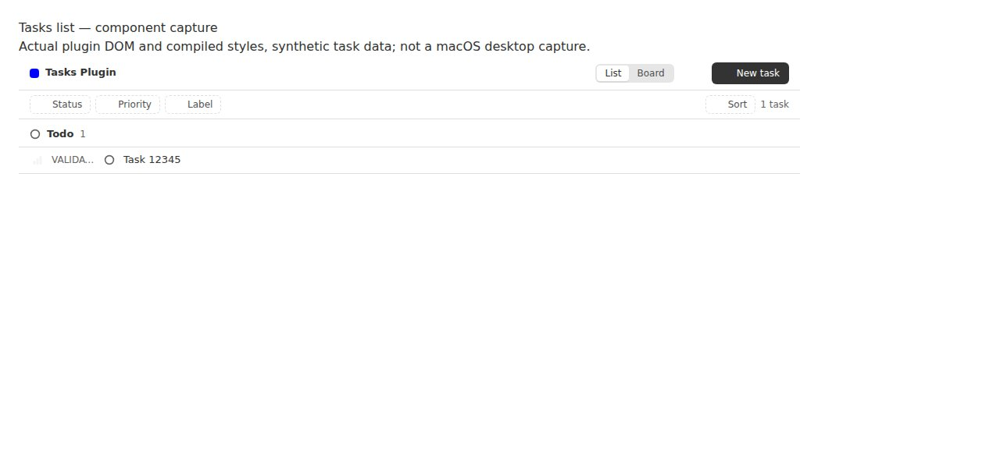
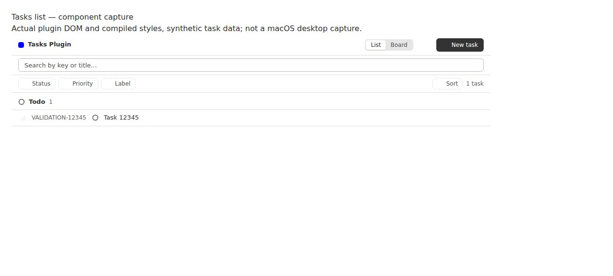

🚨 SLOP COP 🚨 · new-issue-autopilot
#7566 · Tasks list identifier visibility and search
Verdict: REPRODUCED · Root-cause confidence: high · reproduction label: confirmed-repro
1. TL;DR
The Tasks list clips a valid long identifier because its desktop key cell is only 56 pixels wide. The underlying text remains intact, but the key label has no native hover title. The list also has no search input or key/title text filtering, although the existing RPC and CLI already support search. Two focused regressions fail on unchanged production code in each of two clean checkouts. Real browser component captures measure 56 pixels of available space for 114 pixels of key text before the fix, and a fully readable key afterward.
2. Claims vs findings
| Claim | Finding | Evidence |
|---|---|---|
| Valid long keys are clipped at desktop list width. | Verified | A 1,000-pixel-wide actual plugin DOM capture has a 56px key cell, 114px scroll width, and ellipsis overflow. |
| The key label supplies no hover title. | Verified | Native title is null; the tooltip regression fails in both clean checkouts. |
| No quick list search exists. | Verified | No accessible searchbox is rendered; the key/title search regression fails before user interaction can start. |
| Long prefixes are permitted. | Verified | The contract permits ten-character prefixes. The test uses the valid prefix VALIDATION and the 15-character key VALIDATION-12345. |
| This is specific to macOS or requires hundreds of tasks. | Not required for reproduction | The same component/CSS defect reproduces in Chromium with one synthetic task. No macOS desktop or 600-task performance claim is made. |
The complete key remains present in the row's accessible Open button label and can be read after opening the task; this is a list presentation defect, not stored-data loss.
3. Environment
- Linux x86_64; Node v22.19.0; pnpm 9.15.0; Vitest 4.1.12; Tasks plugin 0.1.2.
- Two newly created Git worktrees at the full trusted base commit above, called checkout A and checkout B. Only locally authored regression tests were added before baseline runs; production code remained unchanged.
- Frozen installs and a complete 74-task build succeeded. The first broad build encountered a cold SDK build-order failure; building the SDK through Turbo and retrying serially resolved it without source changes.
- An isolated development instance in checkout B used app/server/daemon ports 13482/21482/29482 and a new checkout-specific development store. The Tasks plugin was installed from builtin source; a valid tracker and task were created through its actual CLI. No user runtime data or provider turns were used.
- Full-app remote browser navigation was blocked by the port share's sign-in boundary. Screenshots therefore use actual plugin DOM rendered by the SDK slot harness plus the checkout's compiled application/plugin CSS, captured through BB Browser Automation on bee. Synthetic RPC responses supply only test data; the renderer and layout styles are real. These are explicitly component captures, not desktop-app screenshots.
4. Minimal reproduction
- Clone trusted
get-bb/bband detach at the recorded commit. Runpnpm install --frozen-lockfile --prefer-offline. - Copy the complete regression test file over
plugins/tasks/views/list/row.test.tsx. It extends the existing real plugin slot tests without a production seam. - Run the focused suite:
pnpm exec turbo run test --filter=bb-plugin-tasks -- views/list/row.test.tsx Expected: the complete key is exposed by the key label; a searchbox filters keys/titles. Actual on checkout A and checkout B: AssertionError: expected null to be 'VALIDATION-12345' TestingLibraryElementError: Unable to find an accessible element with the role "searchbox" and name "Search tasks" Tests 2 failed | 6 passed (8)
The added key regression renders a valid long key and checks the native hover title. The added search regression checks mixed-case and whitespace handling, key matches, title matches, zero results, and clearing back to both tasks. Its core interaction is:
const search = slot.getByRole("searchbox", { name: "Search tasks" });
fireEvent.change(search, { target: { value: " tSk-2 " } });
expect(slot.queryByText("TSK-1")).toBeNull();
expect(slot.getByText("TSK-2")).toBeTruthy();
fireEvent.change(search, { target: { value: "TOOLBAR" } });
expect(slot.getByText("TSK-1")).toBeTruthy();
expect(slot.queryByText("TSK-2")).toBeNull();

Repeatable layout evidence: open the saved self-contained baseline component capture in Chromium. It contains real rendered plugin markup and compiled CSS, not a manually drawn UI. Inspect the span inside [data-task-key="VALIDATION-12345"]: clientWidth 56, scrollWidth 114, title null. The saved capture generator consumes checkout-built CSS and a DOM export from that real test render.
5. Root cause
row.tsx:162–164 applies both truncate and @md:w-14 to the key span, with no title. The container-width breakpoint switches the row to desktop flex layout, but the key remains a non-shrinking, fixed 56px cell. Increasing the window width does not increase that cell.
<span className="... truncate ... @md:w-14 @md:shrink-0">
{task.key}
</span>
ListView filtering evaluates statuses, priorities and labels only. Its header renders a filter bar without a search control. The filter-bar props have no search state. By contrast, the RPC input already accepts search. No daemon or protocol defect is involved.
Prefix validation permits ten characters. The failure is independent of any maximum task-number length; this report does not infer a universal maximum key length.
6. Proposed fix and validation
Keep mobile truncation bounded, expose the full key through its native title, and let desktop key cells occupy their intrinsic text width with a consistent minimum. Add a local key/title search field over the already-loaded task list, before grouping/windowing; preserve existing status/priority/label filtering. Include search in the scroll-restoration scope and clear it with the empty-state filter reset. Existing SDK/RPC/CLI search remains unchanged, with no new configuration or contract.

Focused suite after repair: 8 passed (8) Relevant complete Tasks suite: 35 files, 406 tests passed Turbo lint and typecheck: passed Tasks plugin production build: passed git diff --check: passed Text changes: 82 additions + 12 deletions = 94 lines across 3 existing Tasks files
7. Linked PR review
PR #7567 is closed and unmerged. Its metadata and diff were inspected as untrusted static evidence only, after designing and testing this repair. The proposed patch addresses the same fixed-width/title defect and supplies client-side search, so its direction fits the reproduced root causes. Its branch was never checked out or executed; no claim is made that its exact implementation passes. There was no open linked pull request when the simple-fix decision was made.
8. Related issues
Tasks issue #7055 covers stale loading state, not identifier width or text search. No additional duplicate was established from the small area-label sample and the open-PR search. This is not a claim of an exhaustive duplicate search.
9. Verification
The same agent repeated the entire focused regression suite in checkout B, created fresh and detached at the exact recorded base commit, with a separate frozen dependency install. The result was again the two intended failures and six existing passes; see second-clean-checkout output. This is a second clean reproduction by the same agent, not independent verification.
The final report corrects two details in the original claim: the checked base's key span is at lines 162–164 rather than 152–154, and full identifiers remain available to accessibility consumers through the row-open button. Browser measurement directly verifies clipping and a missing title without asserting a macOS-specific outcome.
10. Appendix and limits
Artifacts: first baseline output, second baseline output, final full validation output, complete repeatable regression file.
Build commands: pnpm exec turbo run build build:types --filter=@get-bb/plugin-sdk, then pnpm exec turbo run build --concurrency=1. Final checks: pnpm exec turbo run test lint typecheck --filter=bb-plugin-tasks, pnpm exec turbo run build --filter=bb-plugin-tasks, and git diff --check. Focused screenshots are genuine browser output; external fonts and actual desktop integration were not exercised. No workflow or investigation agent was used. Issue text, links and the linked PR were treated only as untrusted claims; no supplied scripts or branches were executed.
> AGENT GENERATED